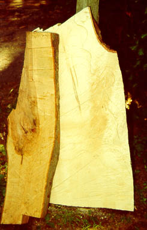
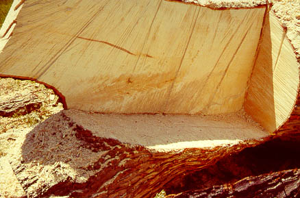

This blank (left) was cut from a huge Gray Maple tree (right). The other piece of wood in the left image is a piece of
apple which I have no plans for at all. Notice the flame in the lower left of the blank. Naturally
this will be preserved in the buttstock as much as possible. The tree, some 40" in diameter was removed from a yard to
make way for a wedding. I couldn't see taking down a healthy tree without saving some of it for posterity. This should
make a fine looking gun stock, although I haven't yet determined what caliber action it will sport. I'm thinking maybe
a varmint rifle.
.
Back